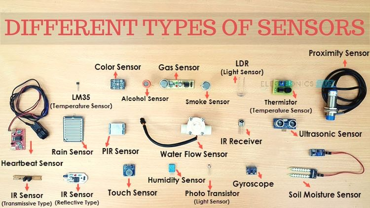
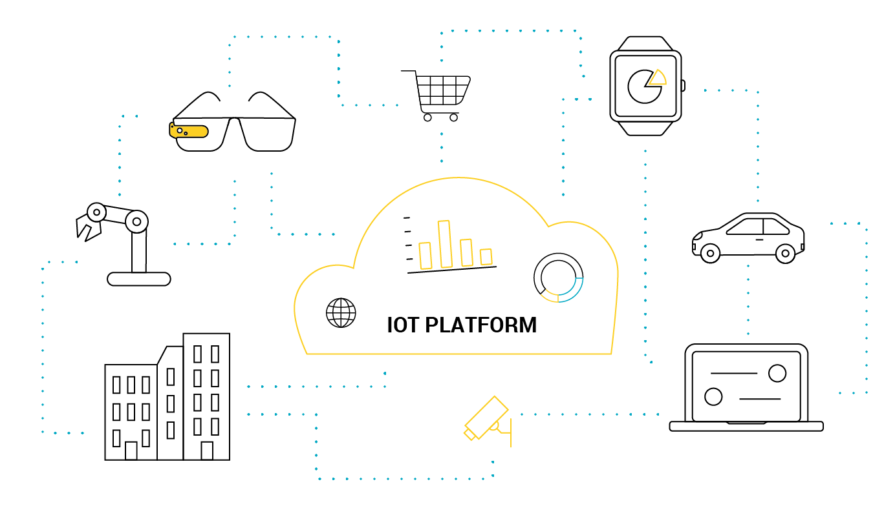

How does The Internet Of Things work?
Censors and processors are installed in objects and collect data about the objects condition such as speed, weight, time, location, temperature, images, or speech-to-text data.

These connect to an internet of things platform which combines data from other censors and processors, and analyses it. The data may be sorted, manipulated, and combined with other services. This produces insights into how the objects operate, information about them, or how they are interacted with.

These can be combined with machine learning to automate decision making, utilising real time and historical data to increase the efficiency of machines, streamline processes, or provide real-time feedback on how an object is performing.